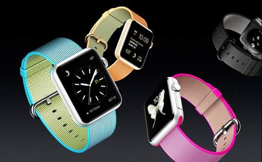
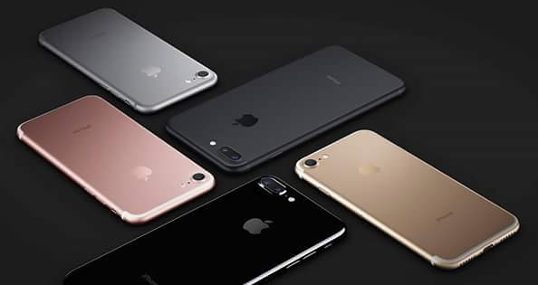

A Apple apresentou os novos modelos series 2, e com ele veio novos recursos como GPS integrado Resistência à água até 50 metros. Novo processador dual core ultrarrápido. Tela duas vezes mais brilhante. O Apple Watch Series 2 vem cheio de recursos para você ficar mais ativo, motivado e conectado. E foi feito para acompanhar você em todos os seus movimentos. O Apple Watch Series 2 com GPS integrado mede seu treino com precisão em uma corrida ou pedalada ao ar livre, até se o iPhone ficar em casa.
Com ele, você pode nadar no mar, saber quantas voltas deu na piscina ou brincar na água com seus filhos. E como a tela é a mais brilhante que a Apple já fez, os dados dos exercícios são fáceis de ler, mesmo com muita claridade. O Apple Watch Series 2 tem classificação de 50 metros de resistência à água1, assim você pode usar seu relógio na piscina ou no mar. O alto-falante foi reinventado pensando nisso. Como ele não pode ser vedado porque precisa de ar para produzir som, O Apple Watch pode ser encontrado no site da apple (apple.com.br), a partir de R$2.199. O iPhone 7 melhora consideravelmente as partes mais importantes da sua experiência com o iPhone.Ele traz um conjunto de câmeras completamente novo, o melhor desempenho e a maior duração de bateria até hoje, sistema de alto-falantes estéreo e tela com mais brilho e cores.
Além de ser resistente à água e respingos. É poderoso em cada detalhe. E poderoso como um todo O design do iPhone 7 atingiu um nível sem precedentes de precisão e inovação. A cor preto brilhante é diferente de tudo que já fizemos, a estrutura é resistente à água1, o botão de Início foi reinventado e a construção unibody dá a sensação de continuidade em todo o aparelho. Só de olhar você já percebe como ele é incrível. O novo botão de Início do iPhone 7 é um botão sólido, criado para ser resistente e responder muito rápido. Ele trabalha com o novo Taptic Engine, dando respostas táteis precisas quando você encosta – e essas respostas podem ser personalizadas. É um botão de Início que abre as portas para um mundo de possibilidades. Junto com o iPhone 7 e o iPhone 7 Plus, apresentamos duas novas cores: preto matte, bem escuro e com bonita textura, e preto brilhante, tão profundo que parece se fundir com o vidro. Os dois modelos - de 4,7 e 5,5 polegadas - são feitos com o resistente alumínio série 7000 e também vêm nas cores que o mundo já adora: prateado, dourado e cor de ouro rosa. Com sua estrutura completamente redesenhada, o iPhone 7 é o primeiro iPhone resistente à água 1. Agora, você não precisa se preocupar tanto em molhar seu aparelho - ou mesmo com respingos e poeira. Ele pode ser encontrado a apartir de R$3.499 no site oficial da apple (apple.com.br).
iphone 7